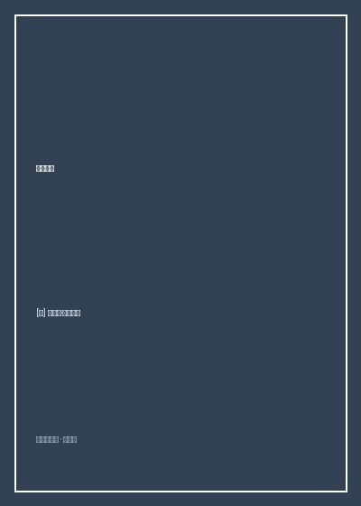

《五号屠场》

总体观点
《五号屠场》是二十世纪人类反战文学中最具颠覆性、最富哲学黑色幽默的无上奇作。作者冯内古特作为亲历1945年德累斯顿大轰炸（盟军燃烧弹在一夜之间将无防备的文化古城化为焦土、导致十三万人惨死）的幸存美军战俘，花费二十余年才终于找到面对这场浩劫的叙事语言。
小说以一种彻底打破线性时间框架的“时间脱臼”后现代结构，将羸弱懦弱的随军牧师助理比利·皮尔格里姆抛入无始无终的时空乱流中。通过外星特拉法马多星人的四维视角，死亡不再是悲剧的终结，而仅仅是琥珀中凝固的一瞬间——当有人死去，全书一百多次淡然重复“事情就是这样”（So it goes）。在极致的荒诞与自嘲之下，隐藏着一个老兵对人类自相残杀兽性最深沉绝望的控诉与悲悯。
核心观点
-
1. “时间脱臼”：创伤后应激障碍（PTSD）的超现实外化
经历过毁灭性大屠杀创伤的心灵无法再按照线性时间生活，记忆的闪回让过去、现在与未来随时坍塌并置，构成自我保护的防御机制。
比利在1944年阿登战役的冰雪战壕里迈出一步，下一秒便发现自己置身1967年女儿的婚礼现场，再眨眼又躺在精神病院的病床上。 -
2. 特拉法马多星的四维视界与“琥珀中的苍蝇”
在四维外星人眼中，所有时刻永远同时存在，人就像凝固在琥珀中的苍蝇；一个人在此时死去了，但他同时在婴儿期欢笑、在青年期恋爱。
外星人嘲笑地球人把时间当成一条只能往前走的单行线，安慰比利：“当特拉法马多人看到尸体时，只会耸耸肩说‘他此刻看着不太好，但在很多别的时刻他很好’。” -
3. “事情就是这样”：对抗无法承受之重的终极反讽咒语
每当有人死去（无论是被炸死的十三万人、死于坏疽的战友，还是一杯变质的香槟、死在水槽里的一只跳蚤），书中都重复一句“So it goes”，以平淡冷酷解构神圣意义。
全书重复一百零六次“事情就是这样”，将崇高的战争英雄主义剥落殆尽，暴露出生命在暴力与死亡面前草芥般的荒谬与卑微。 -
4. 德累斯顿大轰炸：文明理智面具下的屠杀屠场
德累斯顿没有军工厂与战略要塞，盟军在二战胜利前夕对其发动地毯式燃烧弹轰炸，将一座巴洛克艺术之都变成了沸腾的火葬场熔炉，暴露了战争本身的疯狂。
躲在地下五层五号屠场冷库里的战俘们在轰炸停息后推开沉重铁门，外面整座城市已彻底化为如同月球表面般荒凉灼热的白垩纪焦土。 -
5. 废墟上的鸟鸣：艺术面对战争大屠杀唯一的诚实回答
面对十三万具焦黑尸体，一切宏大的道德说教和华丽文学辞藻都是可耻的；大屠杀过后万籁俱寂，只有一只春天的小鸟发出无辜的提问。
小说在废墟的死寂中收尾：冰雪消融，春天的树木长出新叶，一只鸟儿在枝头对着废墟轻声叫着：“Poo-tee-weet？”（唧唧喳喳？）。
全书结构
-
第一章：作家的序幕——这是一本写坏了的书
作者以真实第一人称自述：回顾自己在德累斯顿当战俘的惨烈经历；历经数十年试图写一部宏伟反战长篇，却发现就像试图写一本反对冰川融化的书一样徒劳。
回忆战后带着战友欧哈尔重返德累斯顿旧地，面对战友妻子“你们老是把战争写成浪漫英雄故事骗年轻男孩去送死”的质问，发誓决不将战争浪漫化。 -
第二章至第四章：时间脱臼的流浪汉比利
引入主角比利·皮尔格里姆：身材羸弱瘦小、当验光师、遭遇空难奇迹生还；在二战阿登战役中走失被德军俘虏，在时空隧道中随机跳跃穿梭。
比利穿着滑稽的女式睡袍被德军推进运送牲口的闷罐列车，在冰冻铁轨上行驶数日，目睹战友罗兰·韦利在极度癫狂中死于脚部坏疽。 -
第五章至第七章：德累斯顿五号屠场与异星乐园
美军战俘被押送至未受战火波及的巴洛克古城德累斯顿，关押在废弃的“五号屠场”肉类冷库；穿插比利被飞碟绑架至特拉法马多星动物园与艳星同居的荒诞情节。
德累斯顿市民在阳光下平静生活，战俘们在麦芽糖浆厂做苦力偷偷舔食营养糖浆，所有人毫不知情灭顶之灾即将在数日后降临。 -
第八章至第九章：火风暴降临与人间地狱
1945年2月13日夜盟军大轰炸爆发，火风暴吸干了地表全部氧气；战俘在冷库躲过一劫，战后奉命挖掘深坑中成千上万被烤成蜡状的平民焦尸。
一位名叫埃德加·德比的善良老高中老师，在废墟清理作业中因为顺手捡起了一只被烧焦的茶壶，被德军巡逻队当场以盗窃罪枪决示众，“事情就是这样”。 -
第十章：战争结束与废墟上的鸟鸣（尾声）
纳粹德国战败投降，战俘们获得自由；比利走在瓦砾遍布的空旷大街上，全书在春天树枝上一只小鸟发出无意义却意味深长的鸣叫声中落下帷幕。
所有死者归于尘土，大屠杀被载入历史档案，唯有鸟儿在死寂的世界里发出清脆的鸣叫：“Poo-tee-weet？”